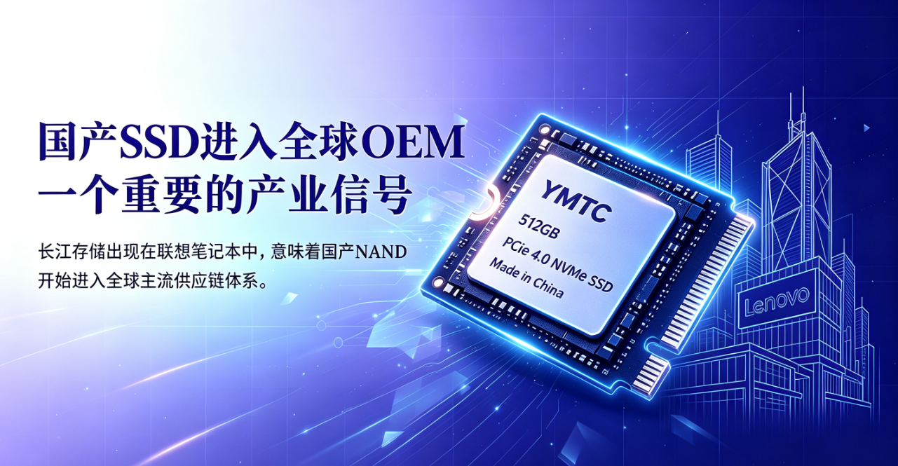
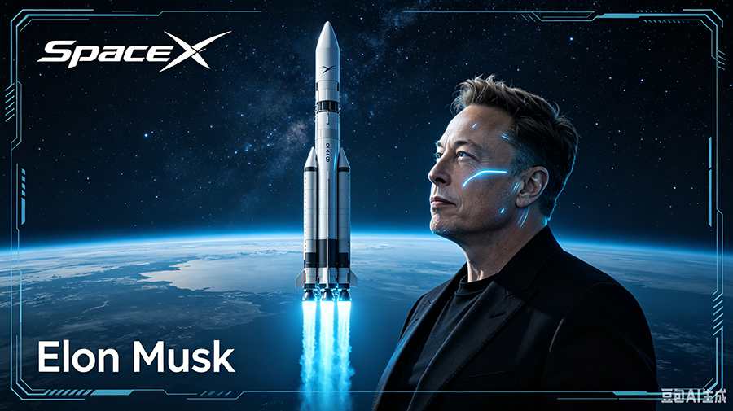
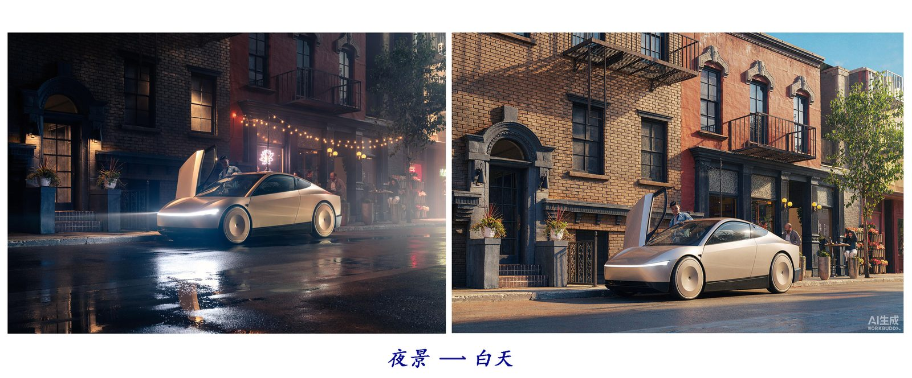
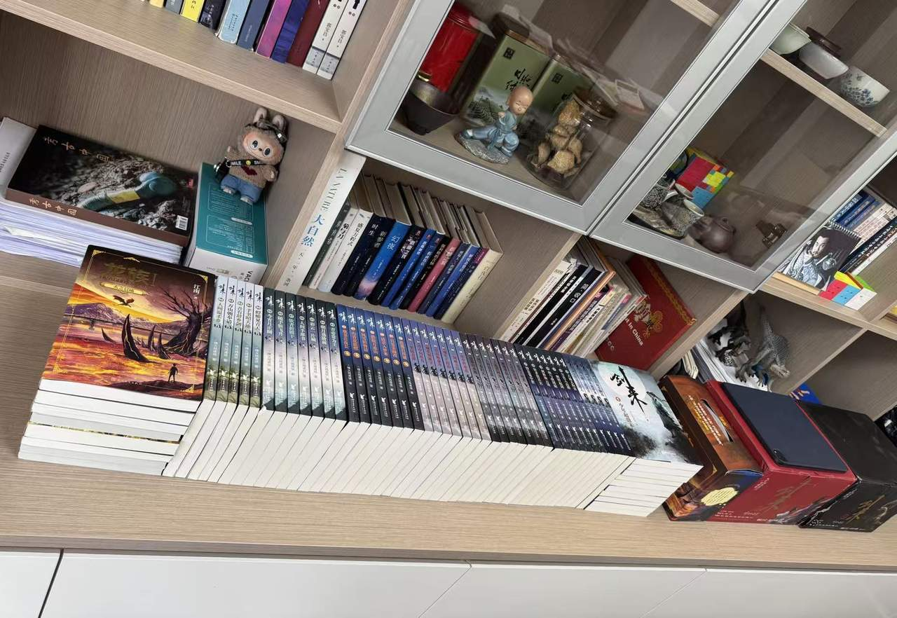
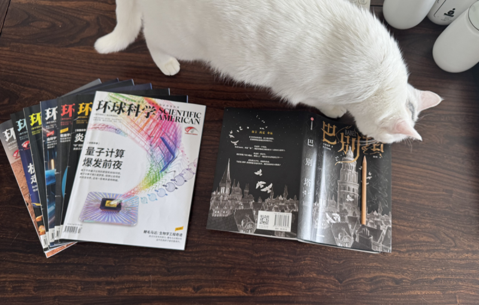
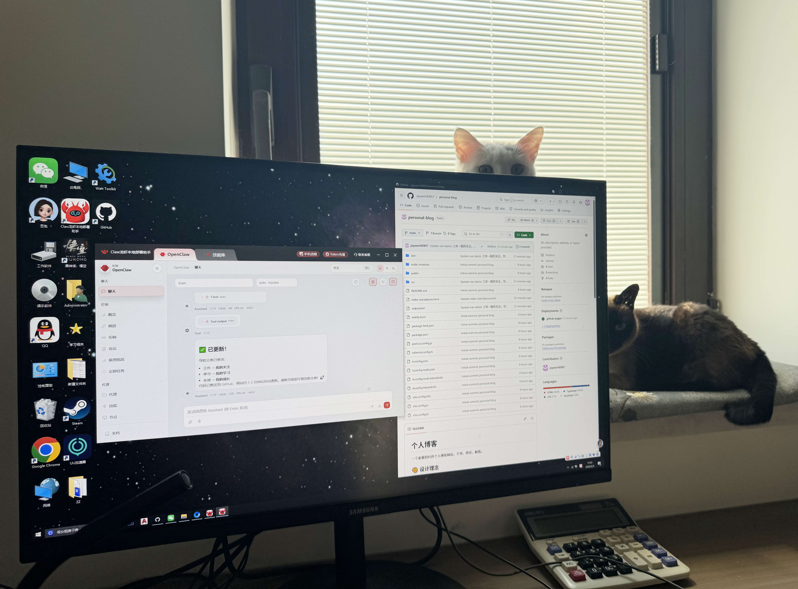

Astra与 Cybercab
发布时间：2026-09-04AGI（通用人工智能）时代真的在今天到来了！
OpenAI发布了GPT 6也叫Astra大模型，可以完全接管人类过去操作电脑这件事(下方视频)。
Tesla昨晚发布汽车机器人 Cybercab，可以完全接管汽车，不再需要人类开车。
一个数字世界，一个物理世界！
（有感觉于：开学还不到一周，我在学校才呆了4天，外面的世界又变了！）
您好，欢迎来到我的空间
独立之精神，自由之思想
AGI（通用人工智能）时代真的在今天到来了！
OpenAI发布了GPT 6也叫Astra大模型，可以完全接管人类过去操作电脑这件事(下方视频)。
Tesla昨晚发布汽车机器人 Cybercab，可以完全接管汽车，不再需要人类开车。
一个数字世界，一个物理世界！
（有感觉于：开学还不到一周，我在学校才呆了4天，外面的世界又变了！）
2026年8月30日，SpaceX的猎鹰重型火箭载着NASA 的罗曼空间望远镜飞向太空！
致敬NASA！致敬马斯克！
今天早上，朱雀三号遥二的一级火箭陆地回收圆满成功！这是我国第一次用着陆腿方式实现轨道级火箭一子级陆地回收；在国内民营航天历史上，首次做到"卫星入轨+一级陆地回收"双成功！
虽然与马斯克的SpaceX还有不小差距，但我们一直在努力！加油！
今天中午，长征十号乙完成全球首次海上网系回收，成功实现一级火箭受控返回并完成海上回收。
真正值得关注的，并不是"全球首次"这个标签，而是中国可重复使用火箭完成了从理论验证走向工程验证的关键一步。
我真想快快长大，为祖国的航天事业做点贡献！

联想电脑已经开始装载长江存储的 SSD 固态硬盘了！
AI 歌手跟阿根廷队共同创作表演的世界杯主题曲，有意思
Elon Musk 关于 SpaceX 上市和人类文明发展的精彩历程。

SpaceX 的星舰是人类历史上最强大的运载火箭，它将带领我们走向火星，成为多行星物种。
美国大火箭 SpaceX 即将上市，这次发行肯定会相当火爆，应该是全球投资史上的超级盛宴和历史记录！
Elon Musk 说，假设有外星物种拜访我们，他们会用一个最客观的指标来评判我们这个文明的发展程度。就是看一个特定文明到底能够驾驭多少能量。俄罗斯物理学家卡尔达舍夫提出了这个概念，我认为这个描述非常准确。一个文明能在多大程度上驾驭其母星的可用能量，这就是 I 型文明；II 型文明是看你驾驭了多少所在恒星的能量；III 型文明则是你能驾驭多少所在星系的能量。这些都是非常客观且可量化的指标。按照目前的状况，我们的文明等级还非常低，如果要算我们驾驭了地球总能量的占比，这个数字微乎其微。我们几乎完全没有驾驭太阳的能量。要感受太阳有多大，有一种方式是将太阳的质量和太阳系中其他所有物质的总质量做个对比。太阳占据了太阳系总质量的绝大部分，它几乎就是一切。在剩下的一点点中，大部分都属于木星这一颗行星。地球的全部质量只能算在微小的其他杂项里，和太阳相比地球就像一粒微尘。投射到地球上的太阳能大约只占太阳输出总功率的十亿分之五，且其中的绝大多数我们也无法利用，因为地球 70% 的表面被水覆盖。甚至在剩下 30% 的陆地中，还有很大一部分是像南极洲、西伯利亚、加拿大北部这样的地区，环境恶劣通常不适合人类居住。
所以，地球表面可用的太阳能面积很有限，冷却和供电也会成为限制，但在轨道上，太阳能充足散热，可以直接向真空辐射。这样就避免了在地球上建造庞大的发电厂，并解决了散热问题。
文明从 I 型跨越到 II 型，难度不是一般的大。至于 III 型，我们甚至连从哪儿下手都毫无头绪。但 AI 最终会解决这些问题。
我们现在的构想以及打算去做的，就是努力在文明等级上攀登，成为一个相对体面的文明。"这样当外星人，希望宇宙中有外星人，最终决定和我们交流时，我们至少已经利用了相当数量的太阳能。这让我们看起来不会显得太过可悲，毕竟目前我们的处境确实有些可悲。"好可爱的发言！
我们平时谈论的历史上的伟大人物，他们都在地面上研究人与人的关系。而马斯克，应该是第一个代表人类向外太空探求的传奇人物。难怪好多人喜欢他、崇拜他！至少很多人是带着些许梦想的，如果有条件还能买点儿他的股票，以后可以光荣的说：
"我，赞助过马斯克的太空计划！"……
我让旺财帮我把一张夜景图改成白天的效果，电脑上没有相应的软件，它自己下了一个，结果发现改图是收费的！我训斥了它，让它找个免费的，它说它自己来改改试试。它说它没有图生图的本事，但可以自己先用文字描述原图片，然后再文生图。下边就是他的工作成果：

上周，妈妈抛弃了她养的龙虾（OpenClaw），开始使用WorkBuddy，并给它起名为：旺财（妈妈说是为了致敬周星驰先生 ）。
之所以更换智能体，是因为龙虾烧token很多，太贵了！现在这个旺财每天有赠送的积分，暂时够我们用了！
今天我让旺财帮我做了个小游戏，可以在手机上玩的接福气的小游戏，我和妈妈比赛谁接得多呢，结果肯定是我胜出啦！
整理了一下书架，科幻、历史、文学各占一角。阅读大概就是最安静的学习吧。

飞速发展的现代科技让我大开眼界，满心期待更加智能更加美好的未来。但我也时常暗自忧虑，怕日新月异的技术迭代太快，稍有松懈就会被时代淘汰！


我家养了两只猫，一只八岁，另一只刚满一岁。
最近，我家又养了一只龙虾（OpenClaw），虽然还没满月，但它已经能帮我干活儿了。
这不，我的网站就是它给我搞定的！